Wearable robotics
Exosuits and wearable robots for the upper limb, with a focus on low on-body mass.
Robotics PhD student at Georgia Tech, building wearable robots
I build robots and medical devices that work on, and with, the human body: wearable robots, soft actuators, health monitoring sensors, and instruments for clinical pain testing. I take a device from requirements to CAD, electronics, a working prototype, and bench validation.
About
I am a Robotics PhD student at the Georgia Institute of Technology, co-advised by Prof. Alexander T. Adams in the Uncommon Sense Labs and Prof. W. Hong Yeo in the Bio-Interfaced Translational Nanoengineering (BITN) Group. I hold an MS in Mechanical Engineering (Dynamic Systems and Controls) from The University of Texas at Austin and a BS in Mechanical Engineering from Chung-Ang University in Seoul.
At UT Austin I worked in the ReNeu Robotics Lab (Rehabilitation and Neuromuscular Robotics Lab) with my advisor, Prof. Ashish Deshpande, on an anatomically correct robotic hand and on bio-inspired soft actuators for upper-limb exoskeletons. Before that, in the Assistive and Rehabilitation Robotics Lab at Chung-Ang, I designed the actuator of a soft exosuit that lowers the metabolic cost of work for forest workers.
During my bachelor's I spent two years as a facility equipment manager at the Veterans Health Service (VHS) Medical Center in Seoul, repairing and calibrating clinical equipment such as non-invasive blood pressure monitors. Working next to patients with unstable motion is what pointed me toward wearable and rehabilitation devices, and it taught me that a device is only as good as how reliably it works in someone else's hands.
Exosuits and wearable robots for the upper limb, with a focus on low on-body mass.
Cable-driven, pneumatic, series elastic, and electromagnetic actuators, from concept through fabrication and testing.
Instruments for quantitative sensory testing and the phantoms and protocols that verify what they deliver.
Soft sensors and mobile imaging that move measurement out of the clinic and onto the body or the phone.
Research
Fifteen projects across four universities. Select a card for details, figures, and links.
A lightweight wearable robot for the upper limb that I am currently developing and testing. I am responsible for the mechanical design, the drive electronics and custom PCB, and the bench validation plan, with a focus on keeping the mass on the body low.
A second-generation handheld instrument for quantitative sensory testing at the bedside. It delivers thermal stimuli with a Peltier module and mechanical stimuli (pressure and pinprick), measures the temperature and force it actually delivers, and runs on a custom board.
Both projects above are ongoing and unpublished. Details will be added after publication.
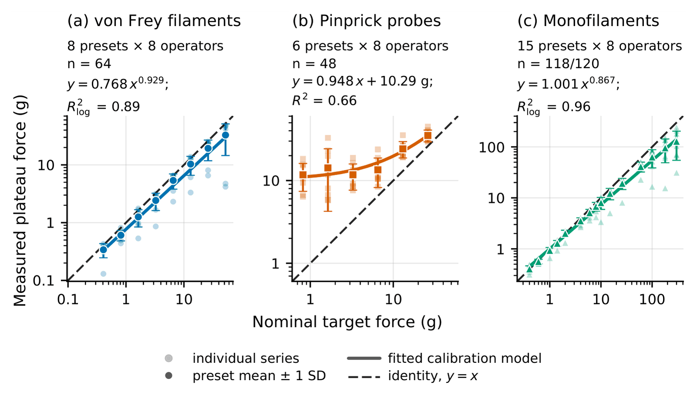
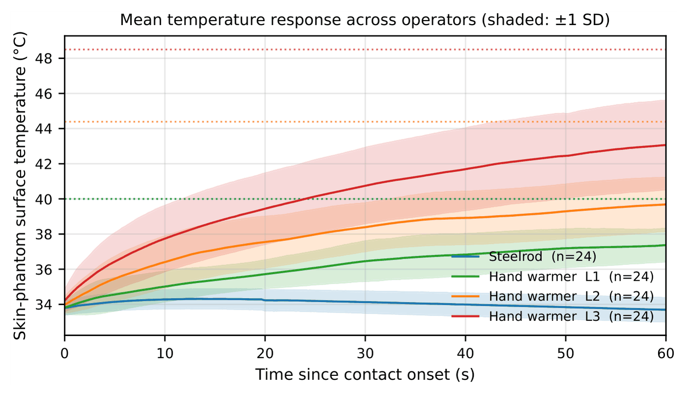
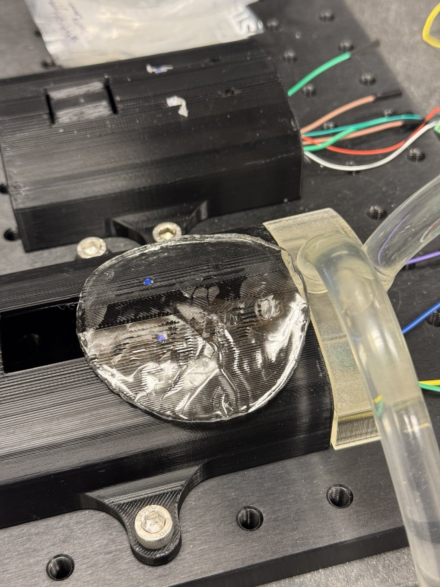
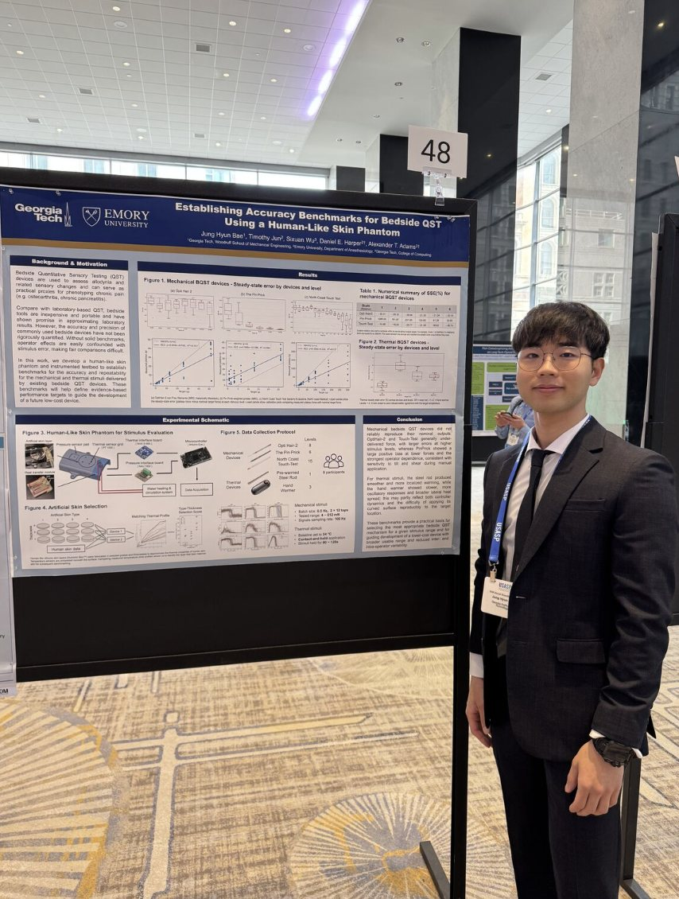
Quantitative sensory testing (QST) is how pain researchers measure sensitivity to touch, pressure, and temperature, but nominal device specifications may not fully characterize the stimulus a device delivers in use. During summer research internships (2025 and 2026) in the Department of Anesthesiology at Emory University, I led a project to measure it directly.
The abstract appeared in The Journal of Pain (USASP), and the first-author full manuscript is under review at the same journal. The result plots above are from that manuscript. The findings started BQST 2.
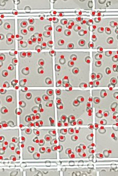
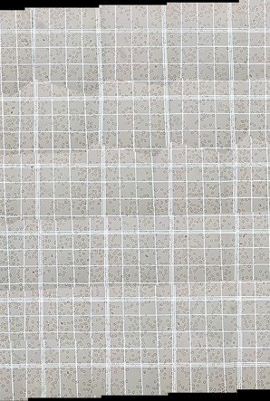
μMobileScan is a smartphone app for whole-slide imaging. It guides the user in real time during capture and automates red blood cell counting, with the goal of low-cost, point-of-care hematology.
I co-developed the application. Published in the Proceedings of the ACM on Interactive, Mobile, Wearable and Ubiquitous Technologies (IMWUT), March 2026.
Fetal monitoring today centers on heart rate. INDUCTUS extends it to mechanical activity: a high-resolution soft-sensor system that continuously monitors fetal movement in utero through vibration sensing.
Presented as a poster at the 48th Annual International Conference of the IEEE Engineering in Medicine and Biology Society (EMBC 2026), Toronto, Canada.
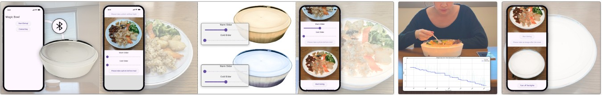
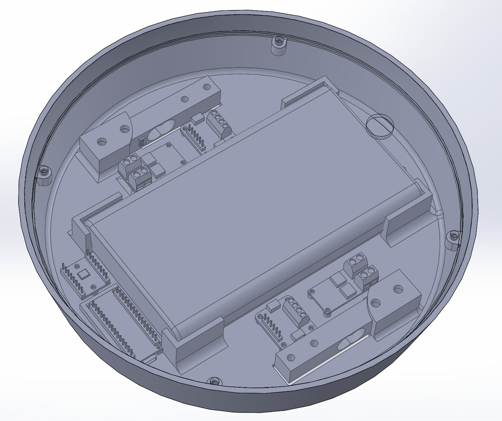
LumiBite is a lunchbox that lights food from below with lighting personalized to the user. It was studied in the wild as a technology probe for enhancing the dining experience.
I designed the device hardware and wrote embedded firmware for it (ESP32, Bluetooth Low Energy, and a load cell front end). Published at the ACM International Conference on Tangible, Embedded, and Embodied Interaction (TEI '26).
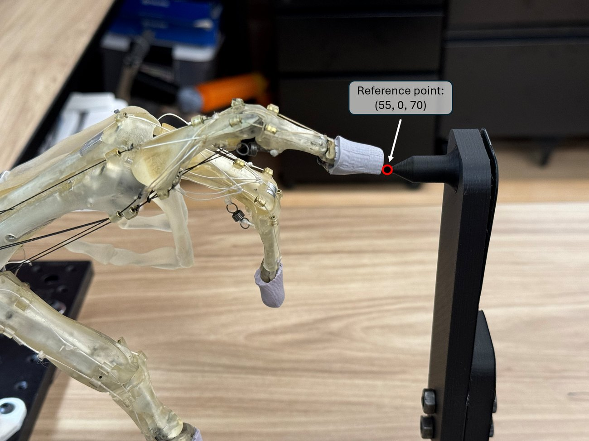
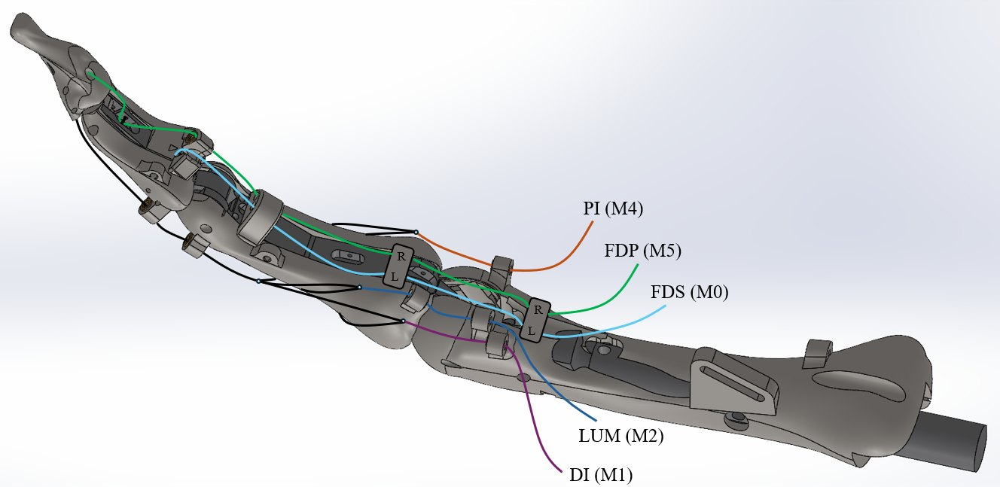
The human hand is a remarkable biological system, and the limited understanding of its biomechanics and neuromuscular control makes it hard to build robotic hands and prostheses that match it. The Anatomically Correct Testbed (ACT) Hand reproduces the musculoskeletal structure of the human fingers so that those mechanics and control strategies can be studied on real hardware.
MS thesis (2024): Development of the ACT Hand with a Broad and Precisely Adjustable Stiffness Spectrum via Series Elastic Actuators, The University of Texas at Austin.
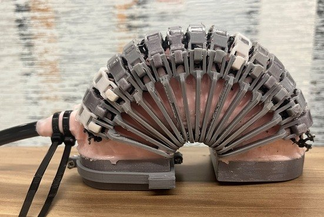
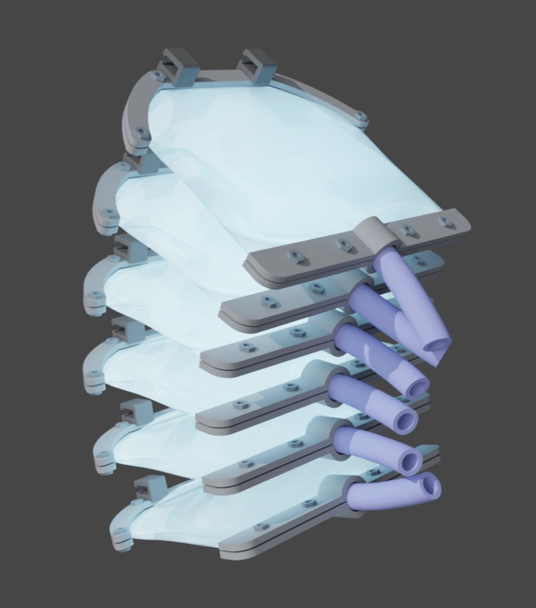
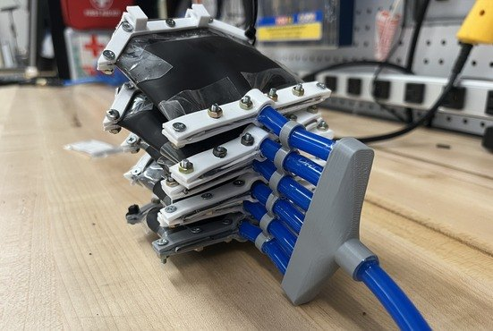
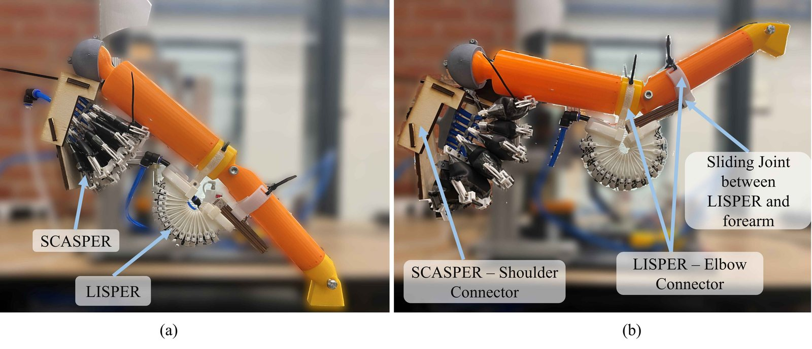
This study developed and evaluated two novel pneumatic actuators using kinematic and dynamic simulations and experiments: the Lobster-Inspired Silicone Pneumatic Robot (LISPER) for the elbow and the Scallop-Shaped Pneumatic Robot (SCASPER) for the shoulder. LISPER incorporates detailed bellow-shaped folds, meshes, and braces, while SCASPER achieves adjustable linearity of output force and torque through modifications to the silicone rubber strip pattern.
LISPER performs well in range of motion, output force and torque, bandwidth, and linearity. SCASPER provides sufficient force and torque over a wide range of motion for shoulder flexion. Validation on a two-degree-of-freedom robot arm confirmed that both work as intended. I designed and fabricated the two-degree-of-freedom soft robot system, including the silicone pneumatic actuator.
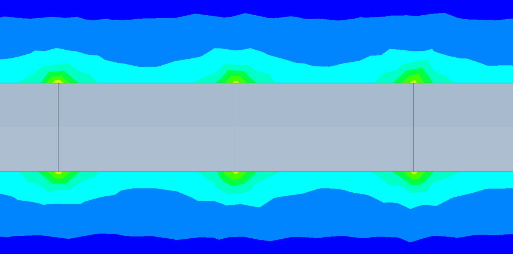
Project: A Novel Soft Electromagnetic Actuator with Lorentz-type Design and Ferrofluidic Bearings for High Strength, Efficiency, and Transparency, with research support from Meta Platforms, Inc.
The goal was a soft electromagnetic actuator for wearable haptic devices, designed to make the most of the ferrofluid. My work covered prototype fabrication and testing: the power drive, coil insulation, and force tests compared against finite element predictions.
A robot hand manipulation and teleoperation project in the Human Centered Robotics Lab, with research support from Sony Corporation. I planned and simulated motion tasks for the hand using MoveIt and the Gazebo environment.
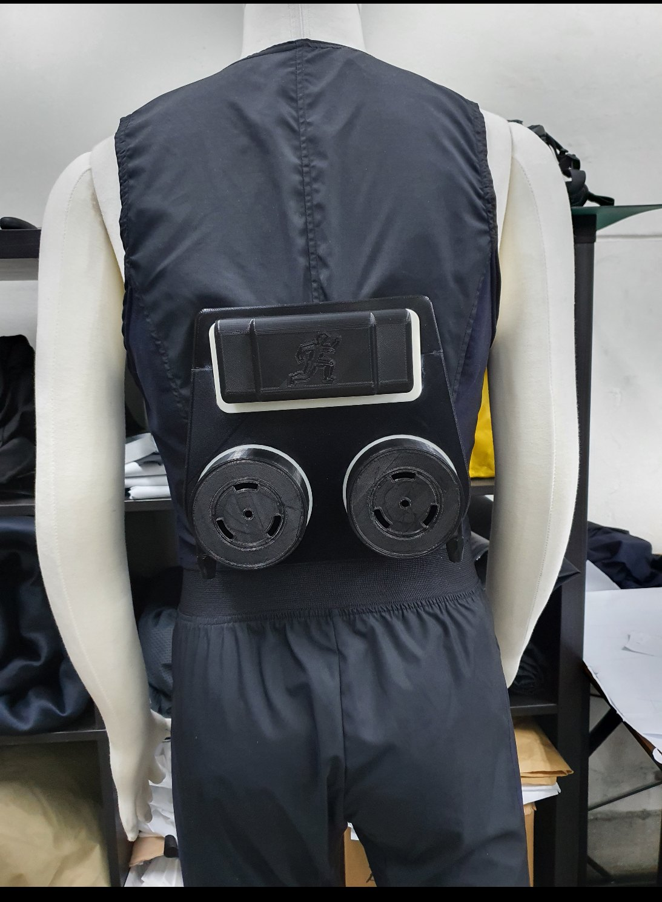
FLEX is a smart wearable suit, combined with deep learning, for muscle power assistance, injury prevention, and work efficiency for forest workers. I worked on it as a research assistant in the Assistive and Rehabilitation Robotics Lab.
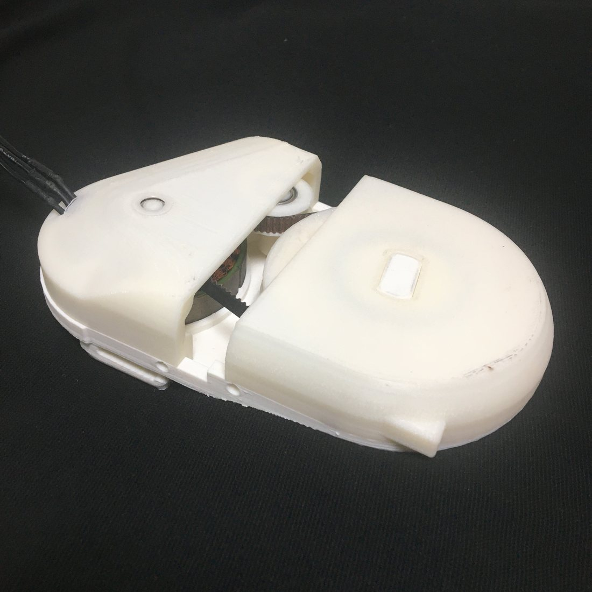
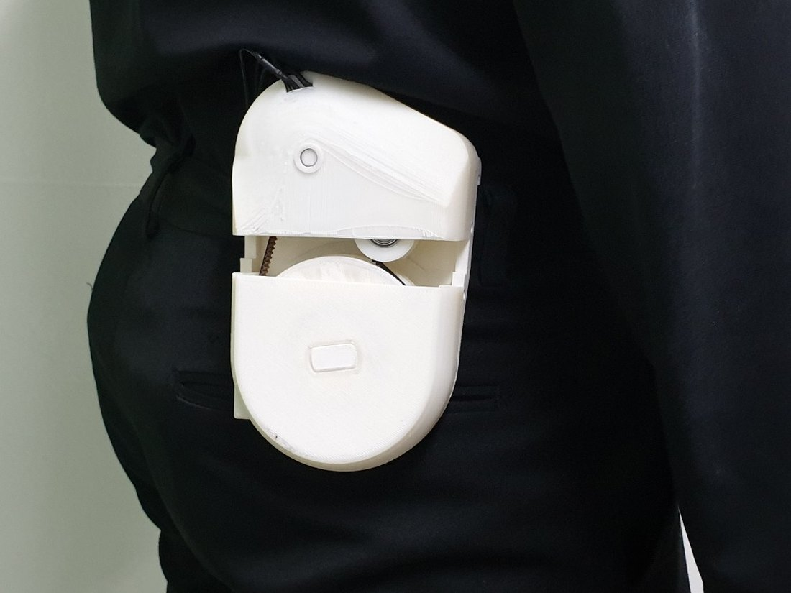
Developed a compact and lightweight actuator by replacing the conventional planetary gears used in wearable robots with a timing belt system. The encoder sits inside the tensioner pulley to enable control of the BLDC motor.
The mechanical design accounts for the thickness of the power transmission shaft and the tension of the belt, while a curved housing keeps the volume minimal and the unit comfortable to wear on the hip.
Built during the Mechanical Engineering Short Term Research Program (MESTER) at Chung-Ang University, where it received the Excellence Award (October 2020).
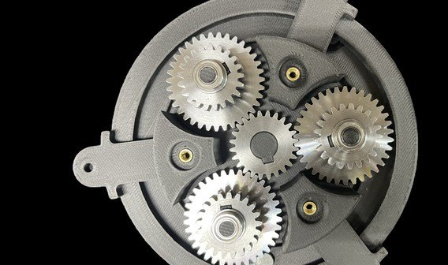
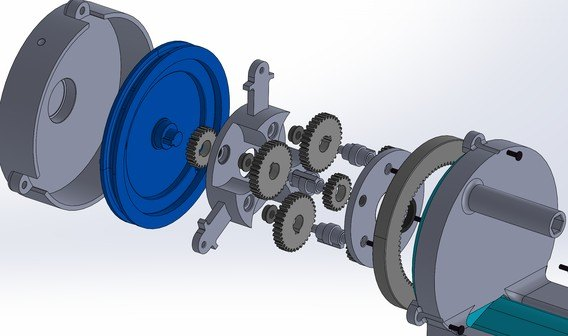
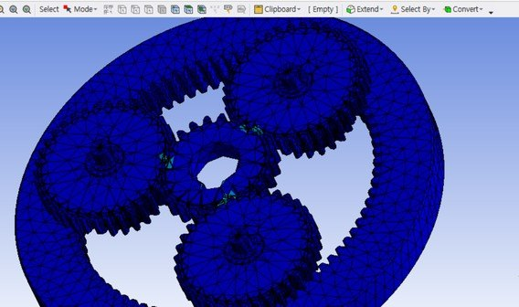
Capstone design project and BS thesis. The device uses a planetary gear system and a wire-driven mechanism to deliver energy from the arm movement of running to the soles and strengthen propulsion. Designed in SolidWorks, analyzed in Ansys, and prototyped with 3D printed parts.
Final project for ME 392 Advanced Mechatronics II, with Dong Ho Kang. Using a tapping-mode macro AFM that tracks the sample vertically and a moving stage in the horizontal plane, we modeled the error of the imaging stages (power spectral density and cumulative power spectrum) and scanned a 10 mm by 10 mm area of a nickel coin with LabVIEW and a programmable stage.
Course project with Alexander Khair and Michael Kasman. Drones map areas well but spend far more energy in flight than ground robots do, and weight is critical. The proposal uses a double four-bar loop mechanism to transform the vehicle between air, ground, and water configurations, so the propeller that lifts in the air also drives on water and works as a wheel on the ground.
No projects in this category yet.
Research output
Papers, conference presentations, and my MS thesis. Some of these list my name as Jung Hyun Bae.
Under reviewThe Journal of Pain
IEEE EMBC 2026 · Toronto, Canada
The Journal of Pain, vol. 41 · USASP
Proceedings of the ACM on IMWUT, vol. 10, no. 1
Frontiers in Robotics and AI, vol. 11
The University of Texas at Austin
Background
Education, research appointments, teaching, and service.
Georgia Institute of Technology, Atlanta, GA. Institute for Robotics and Intelligent Machines.
The University of Texas at Austin. Dynamic Systems and Controls track.
Chung-Ang University, Seoul, South Korea. Includes two years of military service.
Teaching assistant, Georgia Tech, three semesters. Grading, exam questions, and weekly mentoring of project groups.
Teaching assistant, Georgia Tech. Student projects, proposal feedback, and IRB certification.
Teaching assistant, Georgia Tech. Feedback on research proposals and literature reviews.
Teaching assistant, UT Austin. Ran vibration experiments with Arduino and Python.
Prof. W. Hong Yeo. Upper-limb wearable robot.
Prof. Alexander T. Adams. BQST 2, μMobileScan, INDUCTUS, LumiBite.
Research intern. Bedside QST project and the skin phantom.
Advisor: Prof. Ashish Deshpande. ACT Hand and soft pneumatic actuators.
Robot hand teleoperation (Sony) and a soft electromagnetic actuator (Meta).
Research assistant. FLEX soft exosuit for the Korea Forest Service.
Facility equipment manager. Repair and calibration of medical equipment.
What's new
An upper-limb wearable robot with Prof. W. Hong Yeo, alongside my work in the Uncommon Sense Labs.
The first-author full paper from the BQST skin phantom study is under review.
As a teaching assistant, mentoring student project groups this semester.
Our wearable soft-sensing system for fetal monitoring was presented in Toronto.
Two Uncommon Sense Labs projects I contributed to were published.
Physical accuracy benchmarks for QST devices. The abstract is in The Journal of Pain, vol. 41.
Moved to Atlanta after completing the MS at UT Austin.
Contact
For research conversations, collaborations, or professional opportunities, I am glad to hear from anyone working on robotics, medical technology, or wearable systems.